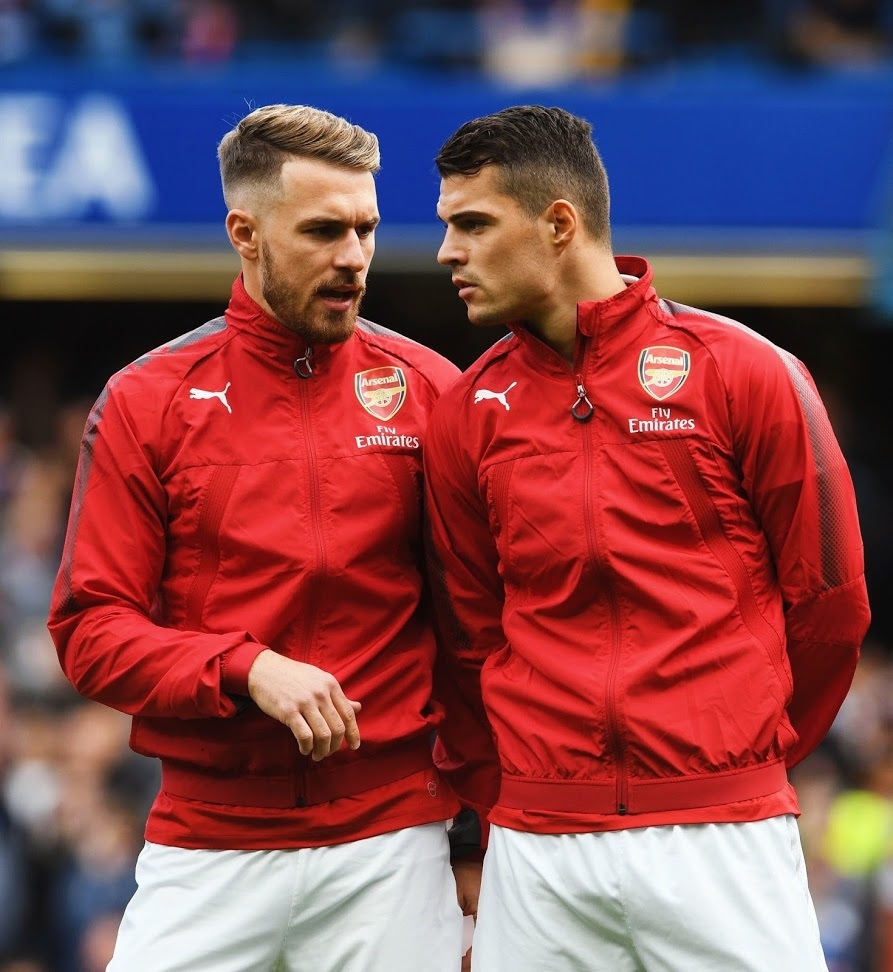
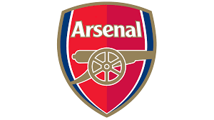
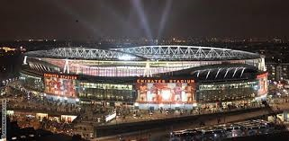
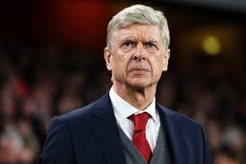
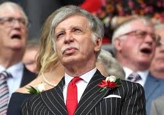

|  |
Arsenal FC |
 | ||||||||||||
|
|
Arsenal Football Club is a professional football club based in Islington, London, England, that plays in the Premier League , the top flight of English football. The club has won 13 League titles, a record 13 FA Cups, two League Cups, the League Centenary Trophy, 15 FA Community Shields, one UEFA Cup Winners' Cup and one Inter-Cities Fairs Cup, and is also the only English club to go a 38-match league season unbeaten, receiving the nickname The Invincibles, and a special gold Premier League trophy Arsenal was the first club from the South of England to join The Football League , in 1893, and they reached the First Division in 1904. Relegated only once, in 1913, they continue the longest streak in the top division and have won the second-most top-flight matches in English football history. In the 1930s, Arsenal won five League Championships and two FA Cups, and another FA Cup and two Championships after the war. In 1970–71, they won their first League and FA Cup Double . Between 1989 and 2005, they won five League titles and five FA Cups, including two more Doubles. They completed the 20th century with the highest average league position. |
|||||||||||||
|
Herbert Chapman won Arsenal's first national trophies, but died prematurely. He helped introduce the WM formation, floodlights, and shirt numbers and added the white sleeves and brighter red to Arsenal's kit. Arsène Wenger has been the longest-serving manager and has won the most trophies. He has won a record 7 FA Cups, and his teams set English records for the longest win streak and longest unbeaten run.
|
||||||||||||||
The Club |
||||||||||||||
|  |  |  | ||||||||||||
Emirates Stadium
|
Arsene Wenger
|
Stan Kroenke
|
||||||||||||
|
In 2000 Arsenal proposed building a new 60,361-capacity stadium at Ashburton Grove, since named the Emirates Stadium, about 500 metres south-west of Highbury. The project was initially delayed by red tape and rising costs and construction was completed in July 2006, in time for the start of the 2006–07 season.The stadium was named after its sponsors, the airline company Emirates, with whom the club signed the largest sponsorship deal in English football history, worth around £100 million |
Manager Arsène Wenger, appointed in 1996. New, attacking football, an overhaul of dietary and fitness practices and efficiency with money have defined his reign. Accumulating key players from Wenger's homeland, such as Patrick Vieira and Thierry Henry, Arsenal won a second League and Cup double in 1997–98 and a third in 2001–02. In addition, the club reached the final of the 1999–2000 UEFA Cup, were victorious in the 2003 and 2005 FA Cups, and won the Premier League in 2003–04 without losing a single match, an achievement which earned the side the nickname "The Invincibles".This latter feat came within a run of 49 league matches unbeaten from 7 May 2003 to 24 October 2004, a national record |
The largest shareholder on the Arsenal board is American sports tycoon Stan Kroenke. Kroenke first launched a bid for the club in April 2007 and faced competition for shares from Red and White Securities, which acquired its first shares off David Dein in August 2007. Kroenke came close to the 30% takeover threshold in November 2009, when he increased his holding to 18,594 shares (29.9%).In April 2011, Kroenke achieved a full takeover by purchasing the shareholdings of Nina Bracewell-Smith and Danny Fiszman, taking his shareholding to 62.89%. As of May 2017, Kroenke owns 41,721 shares (67.05%) and Red & White Securities own 18,695 shares (30.04%) |
||||||||||||